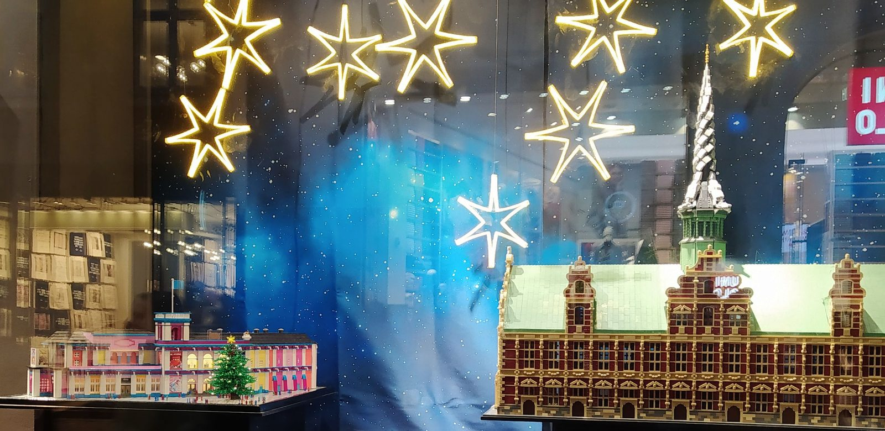

Welke LEGO adventskalender 2026? Alle zes naast elkaar, per leeftijd
LEGO heeft voor 2026 vijf nieuwe adventskalenders: Marvel, Star Wars, City, Friends en Disney Princess. Van Harry Potter ligt alleen de editie van 2025 nog in het schap. Hieronder per kalender wat erin zit volgens LEGO zelf, vanaf welke leeftijd hij bedoeld is, en welke je kiest bij welk kind.

In het kort
Het korte antwoord: kies op de wereld die het kind al kent, en kijk dan pas naar de leeftijd. Een Marvel-fan wordt blij van de Marvel-kalender, een kind dat The Mandalorian kijkt van Star Wars, en een kind van vijf dat nog geen favoriete film heeft van City. Klik op een naam om naar de uitleg te springen; de prijzen komen live van bol.
De zes naast elkaar
Leeftijd en aantal onderdelen zoals LEGO ze zelf opgeeft op de productpagina van elke set, nagekeken op 22 september 2026.
| Kalender | Setnummer | Leeftijd volgens LEGO | Onderdelen | Figuren |
|---|---|---|---|---|
| Marvel 2026 | 76340 | 6+ | 317 | 6 minifiguren: Spider-Man, Iron Man, Dr. Doom, Ghost-Spider, Captain America en Wolverine |
| Star Wars 2026 | 75456 | 6+ | 293 | 4 figuren, onder wie de Mandalorian, Moff Gideon en Grogu, plus 7 minivoertuigen |
| City 2026 | 60510 | 5+ | 252 | De Kerstman, de Kerstvrouw, 3 elfen, een sneeuwpop en een babyrendier |
| Friends 2026 | 42698 | 6+ | 211 | 3 minipoppetjes (Nova, Liann en Aliya) en 6 dierfiguurtjes |
| Disney Princess 2026 | 43298 | 5+ | 290 | 24 minimodellen, waaronder 8 Disney-prinsessen |
| Harry Potter 2025 | 76456 | 7+ | 278 | 8 minifiguren in Zweinstein-kersttruien, plus 6 bouwbare figuren |
Twee dingen vallen op als je ze zo naast elkaar zet. De Marvel-kalender is met 317 onderdelen de grootste van de zes en heeft de meeste bekende helden. En de jongste leeftijd, vijf jaar, geldt alleen voor City en Disney Princess; de rest begint bij zes, Harry Potter bij zeven.
LEGO Marvel adventskalender 2026: wat zit erin?
Omdat dit de kalender is waar de meeste lezers van deze site naar zoeken, hier de volledige inhoud zoals LEGO die opsomt voor set 76340. Achter de 24 deurtjes zitten zes minifiguren (Spider-Man, Iron Man, Dr. Doom, Ghost-Spider, Captain America en Wolverine) en onder meer deze setjes:
- Captain America met een zuurstok en zijn schild
- De robot-inpakmachine van Iron Man
- Een vliegtuigje van Captain America
- Een fotohokje van Captain America
- Een kraampje in Dr. Doom-stijl met Iron Man-speelgoed
- Een truck van Spider-Man
- Een auto van Ghost-Spider
- Spider-Man op ski's
- Een drankjeskraam van Ghost-Spider
- Een sneeuwpop van Captain America
- Een taartkraam van Spider-Man
- Een helikopter van Dr. Doom
- Een sneeuwballenkanon
- De Helicarrier
- Een slee in de stijl van de X-Jet
- Een kerstboom van groene Wolverine-klauwen
Voor welke leeftijd? LEGO zet hem op 6+, en dat is een ondergrens vanwege de kleine onderdelen, niet vanwege de moeilijkheid. Tussen zes en tien jaar haalt een kind er het meest uit: de setjes zijn meestal in vijf tot tien minuten gebouwd, dus het kind doet het zelf. Ouder dan elf en al veel LEGO in huis? Dan zijn het vooral de zes minifiguren die het de moeite waard maken.
Wat is anders dan vorige jaren? De kalender van 2024 was een Spider-Man-kalender (set 76293, 7+, 246 onderdelen, 5 minifiguren: Spider-Man, Green Goblin, Miles Morales, Ghost-Spider en Venom), die van 2023 een Avengers-kalender (set 76267, 7+, 243 onderdelen, 7 minifiguren: Okoye, Doctor Strange, Captain America, Spider-Man, Wong, Iron Man en Black Widow). Die van 2026 mengt de twee werelden, met Spider-Man en Ghost-Spider naast Captain America, Iron Man en Wolverine erbij, die in de kalenders van 2023 en 2024 niet zat. Hij is bovendien een jaar jonger aangeraden. Beide oudere edities zijn bij LEGO zelf uit de handel.
Waar het verschil in zit
De wereld, en dat weegt het zwaarst. De setjes zijn bij alle zes ongeveer even groot en even snel gebouwd. Wat verschilt is wie er uit het deurtje komt. Een kind dat de personages herkent, raadt elke ochtend wie het vandaag wordt; een kind dat ze niet kent, bouwt vierentwintig keer iets zonder verhaal.
Minifiguren of minipoppetjes. Marvel, Star Wars, City en Harry Potter hebben klassieke minifiguren die passen bij alle andere LEGO in huis. Friends heeft minipoppetjes, en Disney Princess zet de prinsessen in minimodellen neer. Wie al een bak LEGO City of Star Wars heeft, kiest dus liever een kalender waarvan de figuren daar gewoon bij kunnen.
Wat er op 25 december staat. De City-kalender heeft een doos die openvouwt tot een speelmat van de werkplaats van de Kerstman, dus daar staat na afloop een compleet tafereel. Bij de andere vijf heb je een verzameling losse setjes en figuren, die vooral los doorgespeeld worden.
Het jaartal. Harry Potter is de enige die hier nog als editie van 2025 in het rijtje staat. Dat heeft een voordeel: er staan beoordelingen van kopers onder, wat bij de nieuwe edities per definitie nog niet kan. Het nadeel: heeft het kind hem vorig jaar gehad, dan is het dezelfde.
Onze zes keuzes
LEGO Marvel adventskalender 2026
De grootste van de zes en de enige met de helden waar deze site over gaat. Spider-Man, Iron Man, Captain America en Wolverine zitten er alle vier in, met Dr. Doom als schurk en Ghost-Spider erbij. Daarmee is dit de kalender voor het kind dat zowel de Spider-Man- als de Avengers-films kent, en dat is een groot deel van de kinderen die hierheen komen.
- De meeste onderdelen van de zes, volgens LEGO
- Zes minifiguren van bekende helden, die daarna gewoon speelgoed blijven
- Vanaf zes jaar, waar de Marvel-kalenders van 2023 en 2024 op zeven stonden
- Nog geen beoordelingen bij bol, want dit is de editie van dit jaar
- Alleen leuk als het kind de Marvel-helden kent
- Kleine onderdelen, dus niet onder de zes jaar
LEGO Star Wars adventskalender 2026
Dit jaar helemaal in het teken van The Mandalorian, met de Mandalorian zelf, Moff Gideon en Grogu in feestelijke outfits. Het verschil met Marvel: minder figuren en meer voertuigjes, zeven in totaal. Dat maakt hem de betere keuze voor het kind dat liever met ruimteschepen speelt dan met poppetjes.
- Zeven minimodellen van voertuigen, om mee te vliegen en te racen
- Grogu erin, voor veel kinderen het leukste figuur van de hele serie
- Past bij alles wat er al aan Star Wars-LEGO in huis staat
- Nog geen beoordelingen bij bol, want dit is de editie van dit jaar
- Maar vier figuren, tegen zes bij Marvel
- Wie The Mandalorian niet kent, mist het verhaal erachter
LEGO City adventskalender 2026
De enige van de vijf nieuwe die LEGO vanaf vijf jaar aanraadt, en de enige waar een kind niets voor gezien hoeft te hebben: de Kerstman, de Kerstvrouw, drie elfen, een sneeuwpop en een babyrendier. De doos vouwt open tot een speelmat van de werkplaats van de Kerstman, dus alles wat uit de deurtjes komt krijgt meteen een plek.
- Vanaf vijf jaar, een jaar eerder dan Marvel en Star Wars
- De doos wordt een speelmat, dus op 25 december staat er een geheel
- Geen film of serie nodig om het te snappen
- Nog maar één beoordeling bij bol, dus daar valt niets uit af te leiden
- Geen superhelden: wie om Spider-Man vraagt, zit hier verkeerd
- Vooral kerstpersonages, dus na december minder om mee door te spelen
LEGO Friends adventskalender 2026
Drie minipoppetjes, Nova, Liann en Aliya, en zes dierfiguurtjes: een zeehond, een pony, een wezel, een ijsbeer, een pinguïn en een konijntje. De setjes gaan over brieven aan de Kerstman schrijven, cadeautjes inpakken en sneeuwballen gooien. Voor het kind dat met LEGO vooral verhaaltjes naspeelt, meer dan dat het bouwt.
- Zes dieren, voor veel kinderen de reden om deze te kiezen
- Setjes die uitnodigen tot naspelen in plaats van alleen neerzetten
- Op voorraad, dus voor 1 december is geen probleem
- Nog maar één beoordeling bij bol
- De minste onderdelen van de zes
- Minipoppetjes in plaats van minifiguren, dus ze passen minder goed bij City of Star Wars
LEGO Disney Princess adventskalender 2026
Vierentwintig minimodellen, waaronder acht Disney-prinsessen. Samen met City de enige kalender die LEGO vanaf vijf jaar aanraadt, en daarmee de logische keuze voor een jong kind dat meer met de Disney-films heeft dan met superhelden.
- Vanaf vijf jaar
- Acht prinsessen in één kalender
- Op voorraad, dus voor 1 december is geen probleem
- Nog geen beoordelingen bij bol, want dit is de editie van dit jaar
- De prinsessen zijn minimodellen, niet de grotere poppetjes uit de gewone Disney-sets
- Alleen leuk als het kind de Disney-prinsessen kent
LEGO Harry Potter adventskalender 2025
Van Harry Potter zien wij bij bol geen editie van 2026, wel die van vorig jaar. Acht minifiguren in Zweinstein-kersttruien, zes bouwbare figuren en tien minimodellen. Omdat hij al een seizoen verkocht is, is het de enige van de zes met een handvol beoordelingen van kopers, en voor een kind van zeven tot twaalf dat de boeken leest de sterkste van het rijtje.
- De enige hier met beoordelingen van kopers
- Acht minifiguren en zes bouwbare figuren
- Voor de oudste kinderen van het rijtje, tot twaalf jaar
- Het is de editie van 2025: check of hij vorig jaar al in huis is geweest
- Vanaf zeven jaar, de hoogste ondergrens van de zes
- Vijf beoordelingen is nog steeds weinig om iets uit af te leiden
Welke LEGO-kalender bij welke leeftijd
Onder de vijf jaar. Geen van deze zes. Ze zitten alle zes vol kleine onderdelen, en de leeftijd op de doos gaat hier over veiligheid, niet over moeilijkheid. Voor die leeftijd staat er een kalender met grotere figuren in onze gids met de zes beste adventskalenders voor kinderen.
Vijf jaar. City of Disney Princess, de enige twee die LEGO vanaf vijf aanraadt. City als het kind nog geen favoriete film heeft, Disney Princess als het om de Disney-prinsessen draait.
Zes tot negen jaar. De leeftijd waarop een bouwkalender het meest oplevert: het kind bouwt elk setje zelf en is er trots op. Marvel, Star Wars of Friends, afhankelijk van wat het kind kijkt en speelt.
Tien tot twaalf jaar. Marvel, vanwege de meeste onderdelen en de meeste helden, of Harry Potter voor wie de boeken leest. Meer cadeau-ideeën op leeftijd staan in welk superhelden cadeau past bij welke leeftijd.
Wat wij niet zouden kopen
Een oudere Marvel-kalender voor meer dan de nieuwe kost. De Spider-Man-kalender van 2024 en de Avengers-kalender van 2023 liggen nog bij bol, maar zijn bij LEGO uit de handel, en toen wij op 22 september 2026 keken vroeg bol voor de Spider-Man-kalender van 2024 meer dan de adviesprijs die LEGO er destijds voor gaf. Leg de prijs dus naast die van de editie van 2026: die heeft meer onderdelen en is vanaf een jaar jonger.
Een kalender van een wereld die het kind niet kent. Het plezier van een adventskalender is het raden wie er vandaag uit het deurtje komt. Wie Grogu niet kent, heeft vierentwintig keer een setje zonder verhaal. Kies bij twijfel City: die werkt zonder voorkennis.
Een LEGO-kalender die je in december bestelt. Hij gaat op 1 december open, en elk jaar zijn de populairste edities in de laatste week van november als eerste weg. Wie in december bestelt, begint met vier deurtjes tegelijk.
Veelgestelde vragen
Welke LEGO adventskalenders zijn er in 2026? Vijf nieuwe: Marvel (76340), Star Wars (75456), City (60510), Friends (42698) en Disney Princess (43298). Van Harry Potter ligt bij bol alleen de editie van 2025 (76456).
Wat zit er in de LEGO Marvel adventskalender 2026? Zes minifiguren (Spider-Man, Iron Man, Dr. Doom, Ghost-Spider, Captain America en Wolverine) en kleine bouwsetjes, van de Helicarrier tot een kerstboom van Wolverine-klauwen, samen 317 onderdelen. De volledige lijst staat hierboven.
Vanaf welke leeftijd is de LEGO Marvel adventskalender 2026? Vanaf zes jaar, volgens LEGO. De vorige twee Marvel-kalenders (2024 en 2023) stonden nog op zeven jaar.
Welke LEGO adventskalender is de grootste? Van deze zes de Marvel-kalender, met 317 onderdelen. Daarna Star Wars (293) en Disney Princess (290); Friends is met 211 de kleinste.
Welke LEGO adventskalender past bij een kind van vijf? City of Disney Princess. Dat zijn de enige twee die LEGO vanaf vijf jaar aanraadt; de andere beginnen bij zes of zeven.
Hoe wij deze zes gekozen hebben
Dit zijn niet zes keuzes uit een groter aanbod, maar alle LEGO-adventskalenders die wij in september 2026 bij bol vinden in een editie van 2026, plus de enige Harry Potter-kalender die er ligt. De feiten over de inhoud, de leeftijd en het aantal onderdelen komen van de productpagina van LEGO zelf en niet van een winkel. Alle zes zijn stuk voor stuk nagemeten op prijs en levertijd bij bol, voor het laatst op 22 september 2026.
Over sterren: een adventskalender is elk jaar nieuw, dus vier van deze zes hebben nog geen enkele beoordeling en twee hebben er één. Dat zeggen we er per blok bij in plaats van de regel weg te laten. Alleen de Harry Potter-kalender heeft er een paar, omdat hij een jaar ouder is.
Via de knoppen naar bol verdienen wij een kleine commissie. Dat verandert niets aan wat hier staat: valt een kalender bij bol weg, dan verdwijnt het blok inclusief onze tekst, zodat er nooit een aanbeveling blijft staan bij iets wat er niet meer is.
💡 Handig om te weten
Het setnummer op de doos is de snelste manier om te zien welk jaar je in handen hebt, want het jaartal staat vaak klein. De Marvel-kalender van 2026 is 76340, die van 2024 is 76293 en die van 2023 is 76267. De nummers van alle zes staan in de tabel bovenaan.
Zoek je een adventskalender zonder bouwen, of voor een kleuter? Kijk dan in onze zes keuzes voor kinderen, met ook een kalender met kant-en-klare figuren en een puzzelspel voor het hele gezin. Voor de rest van het LEGO-aanbod: de leukste LEGO sets voor superheldenfans.